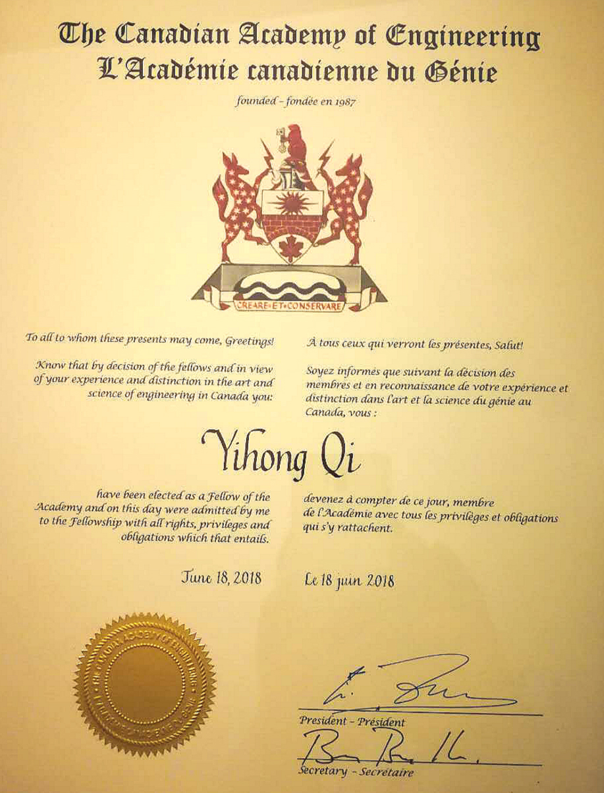

发布日期：2018-04
珠海德百祺科技有限公司法定代表人、董事长，中国“千人计划”特聘专家，美国密苏里科技大学客座教授，湖南大学兼职教授漆一宏博士，成功当选2018年度加拿大工程院院士(Fellow of the Canadian Academy of Engineering)。
查看全文珠海德百祺科技有限公司法定代表人、董事长，中国“千人计划”特聘专家，美国密苏里科技大学客座教授，湖南大学兼职教授漆一宏博士，成功当选2018年度加拿大工程院院士(Fellow of the Canadian Academy of Engineering)。
漆一宏博士长期从事电磁场与微波技术、电磁兼容、噪声理论、天线与系统集成、测量系统等技术领域研发，至今已拥有美国授权专利144项，中国授权专利47项，发表论文79篇，主持和参与各类科研项目3项，充分证明了他为推动技术进步和发展做出的巨大贡献。
加拿大工程院是加拿大国家学院理事会的三个成员之一，是国际工程与技术学院理事会会员。加拿大工程院院士，即加拿大联邦政府授予工程领域代表加拿大国家水平科学家的荣誉称号，同时表明该学者可作为国家智囊团为国家层面课题立项、评审和研究提供权威意见。
